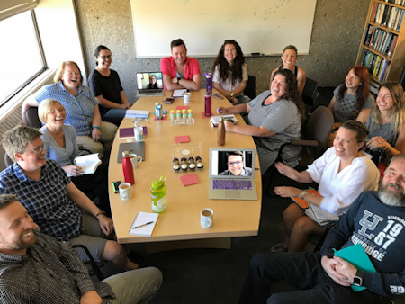

Lab
Members
Post-Doctoral Fellows
Dr Tyler Bonnell
Post-doctoral focus: Movement ecology and
modeling of socio-spatial dynamics (FRQNT Fellowship,
NSERC CRC allocation)
Centre: Psychology, Lethbridge
Dr Flávia Koch
Post-doctoral focus: Personality, stress and network
connectivity as determinants of participation in the intergroup
encounters of vervet monkeys (Deutsche
Forschungsgemeinschaft/German Research Foundation postdoctoral
fellowship)
Centre: Psychology, Lethbridge
Fieldsite: Samara Game Reserve, Eastern Cape, South Africa
Dr Chris Young
Post-doctoral
focus: Sociality, stress and thermal competence in
high latitude cercopithecines (UP Senior Post-Doctoral
Fellowship)
Centre: Psychology, Lethbridge; Endocrine Research Lab, University
of Pretoria
Fieldsite: Samara Game Reserve, Eastern Cape, South Africa
PhD Students
Leila Armstrong
PhD topic: The art of urban ecology (Coca Cola
Award, QE II Scholarship, Dean's Award)
Centre: Psychology, Lethbridge
Rosemary Blersch
PhD topic: Infectious disease and its transmission
in vervet monkeys
Centre: Psychology, Lethbridge
Fieldsite: Samara Game Reserve, Eastern Cape, South Africa
Marcus Dostie
PhD topic: Movement ecology and microhabitat
selection by vervet monkeys (NSERC CRC Allocation, QE II
Scholarship, Dean's Award)
Centre: Geography, Lethbridge
Fieldsite: Samara Game Reserve, Eastern Cape, South Africa
Colin Dubreuil
PhD topic: Auditory communication in vervet monkeys
(NSERC doctoral award, Izaak Walton Killam Pre-Doctoral
Scholarship)
Centre: Anthropology, Calgary
Fieldsite: Samara Game Reserve, Eastern Cape, South Africa
Deanna Forrester
PhD topic: The value of children: alloparenting in a natural
fertility population (SSHRC doctoral award, International
Society for Human Ethology Owen F. Aldis Scholarship, NSERC CRC
allocation, Wenner Gren doctoral grant)
Centre: Psychology/Institute for Childhood and Youth Studies,
Lethbridge
Fieldsite: Samoa
Jonathan Jarrett
PhD topic: Vervet monkey development in life
historical perspective (NSERC CRC allocation)
Centre: Psychology, Lethbridge
Fieldsite: Samara Game Reserve, Eastern Cape, South Africa
Anne Jones
PhD topic: The developmental psychology of affordances
(QE II scholarship)
Centre: Psychology, Lethbridge
Miranda Lucas
PhD topic: Human ethology in a
cultural context (SSRHC doctoral award, QE II
scholarship, International Society for Human Ethology Owen F.
Aldis Scholarship, NSERC CRC allocation)
Centre, Psychology, Lethbridge
Maria Madacky
PhD topic: Art as a conduit for
cross-cultural exchange (Coca Cola Award, QE II
Scholarship, Dean's Award)
Centre: University Art Gallery, Lethbridge
Lesley Marisa
PhD topic: The structuring of habitat use by baboons
in a highveld environment (NRF doctoral award)
Centre: ABEERU, University of South Africa
Fieldsite: Telperion Nature Reserve, Gauteng, South Africa
Christina Nord
PhD topic: Dynamic networks and attention structure in vervet
monkeys (NSERC CRC allocation, Dean's Award)
Centre: Psychology, Lethbridge
Fieldsite:
Samara Game Reserve, Eastern Cape, South Africa
Jessica Parker
PhD topic: Reproductive decisions and trade-offs in the Inuit
(NSERC doctoral award, NSERC CRC allocation, Dean's Award)
Centre: Psychology/Institute for Childhood and Youth Studies,
Lethbridge
Chloé Vilette
PhD topic: Rank, sociability and the determination of female
vervet monkey reproductive success
Centre: Psychology, Lethbridge
Fieldsite: Samara
Game Reserve, Eastern Cape, South Africa
Mitarbeiter
Mirjam Minkner (Max Planck, Leipzig)
PhD topic: Paternity and male vervet monkey reproductive
strategies
Researchers at large
Kerri Norman
Topic: Play in domestic dogs
April Takahashi
Topic: Spatial structure
in male vervet monkey cohorts
Masters Students
Sarah Dada
MSc topic: Situated cognition in humans (NSERC)
Centre: Psychology/Institute for Childhood and Youth Studies,
Lethbridge
Research Assistants (NSERC-funded)
Pia Böhm, Delaney Roth
Current Honours, Independent & Applied Study Students
Rachel
Wells___________________________________


September 2017 (Field): Rose, Pia, Chloé, Delaney, Chris

August 2017 (Lab): Tyler, Josie (Art gallery), Louise, Leila, Anne, Jon, Chelsea,
April, Deanna, Maria, Lorena, Christina, Marcus, and - via Skype - Miranda and Flávia

Newly elected Fellows of the Royal Society of Canada 2016
(L-R: Joe Rasmussen, LB and Bruce McNaughton) with the President and VP Research
Alumni
Distinguished Visiting Research Chair
Professor John Ziker (Fulbright Canada-Palix
Foundation), Anthropology, Boise State University
Graduates
& PDFs
Dr Maria
Stylianou - ESRC-funded post-doctoral fellow
(2007-2008). Now: lecturer, Department of Psychology, Neapolis
University, Pafos, Cyprus;
Dr Alan 'No Relation' Barrett
- PhD (2010). Now: Lecturer, University of South Africa; Dr
Parry Clarke✝. Leakey Foundation and EU-funded
post-doctoral fellow (2007-2008); Petra
McDougall - MSc (2010). Now: PhD candidate,
University of Calgary; Nicola Forshaw - MSc
(2011); Graham Pasternak - MSc (2011).
University of Queensland Medical School, Australia (graduated
2015); Natalie Freeman - MSc (2012). ARC
Research Assistant; now: PhD candidate, University of Queensland,
Australia; April Takahashi - MSc (2012); Jess
Sashaw - MSc (2012). Now: Science facilitator. Science
World; Alena Matlock - MSc (2013); Brittany
Thomas - MSc (2013); Nic Ducheminsky
- MSc (2014); Dr Richard McFarland - NRF-funded
post-doctoral fellow (2012-2014). Now: Assistant Professor,
Department of Anthropology, University of Wisconsin-Madison; Miranda
Lucas - MSc (2014). Now: PhD candidate, University of
Lethbridge; Kerri Norman - MSc (2014); Marcus
Dostie - MSc (2014). Now: PhD candidate, University of
Lethbridge; Nathan Josephs - MSc (2015); Derek
Murphy - PhD (2015); Sarah Erskine -
MSc (2016). Now: Stats Canada analyst; Anne
Jones - MSc (2016). Now: PhD student, University of
Lethbridge.
NSERC-Funded Assistants
Nicole
Whale (2008, MSc. University of Athabasca), David
McCaffery (2009), Ria Boner
(2009-2010, Yale University), Tricia Rubi (2010
- PhD University of Minnesota. 2015), Bruce Raphael
(2011,. Now: MSc candidate, University of Lethbridge), Tom
Rutherford (2011), Jessica Parker
(2011. Now: PhD candidate, University of Lethbridge),
Michael Amirault (2011), Eric Matlock
(2012), Nicholas Collins-Hyrciuk
(2012), Jonathan Jarrett
(2013. Now: PhD candidate, University of Lethbridge), Karen
Lucas (2013), Athenkosi Diba
(2013), Kira Roberts
(2012-2013. Now: Max Planck Mountain Gorilla Project), Marta
Ricart Fincias (2013-2014), Nicola
Guthrie (2013-2014, Now: PhD candidate,
University of Calgary), Luke Larter
(2014, Now: MSc candidate, University of Calgary), Ruth
Dada (2014), Rebecca Pinkham
(2014-2015), Chloe Angwin (2014-2015),
Rachel Stokes (2014-2015), Chloé
Vilette (2015-2016. Now: PhD candidate University
of Lethbridge), Kathrin Masuch
(2015-2016. Now: MSc candidate, University of Vienna), Rosemary
Blersch (2015-2016. Now: PhD candidate, University of
Lethbridge), Nuria Ferrero (2015-2016), Stephen
Morris (2016-2017), Tatiana Bortolato (2016-2017),
Lucy Twitcher (2016-2017),
Martha Kadluk Pingushat (2017), Shelton
Nungnik Nipisar (2017), Lorena Madacky (2017).
Current Collaborators
Professor Leslie Brown
Applied Behavioural Ecology and Ecosystems Research Unit,
University of South Africa
Project: Ecology of vervet monkeys
George Chaplin
Geography, Penn State
Project: Group coordination and distributed cognition in
chacma baboons
Drs Peter Fashing/Nga Nguyen
Anthropology, California State University, Fullerton
Project: Social structure and
movement patterns in gelada
Professors Andrea Fuller/Shane Maloney/Duncan Mitchell/Dr
Robyn Hetem
Physiology,
University of the Witwatersrand Medical School & University of
Western Australia
Project: The regulation of body temperature in social
endotherms
Professor Stefan Kienzle
Geography, University of Lethbridge
Project: Spatial processes in
baboons and vervets
Dr David Lusseau
The Institute of Biological & Environmental Science,
University of Aberdeen
Project: Network structure and social niche construction in
baboons and vervet monkeys
Dr Richard McFarland
Anthropology, University of Wisconsin-Madison
Project: Vervet monkey
thermoregulation and sociality
Professor Josephine Mills
University of Lethbridge Art Gallery
Project: Art, perception and
complex social change
Dr Hugh Notman/Professor
Mary Pavelka
Anthropology, University of Athabasca; Anthropology,
University of Calgary
Project: Auditory communication
in vervet monkeys
Dr Oliver Schülke
Johann-Friedrich-Blumenbach
Institute for Zoology and Anthropology, University of
Göttingen.
Project: Movement ecology of Assamese macaques
Dr
Biren Patel/Dr Nathan Thompson
Keck School of Medicine, University of Southern California/Stony
Brook
Project: Quadrupedal locomotion in baboons and vervets
Dr Thomas Pollet
Social Psychology, University of Leiden
Project: Multi-level analysis and networks
Dr Pamela Qualter
Psychology, University of Central Lancashire
Project: Social engagement and cognition in children
Dr Gert Stulp
Sociology, University of Groninggen
Project: Human behavioural ecology
Professor Anja Widdig
University of Leipzig & Max Planck Institute
for Evolutionary Anthropology
Project: Male
reproductive success in vervet monkeys